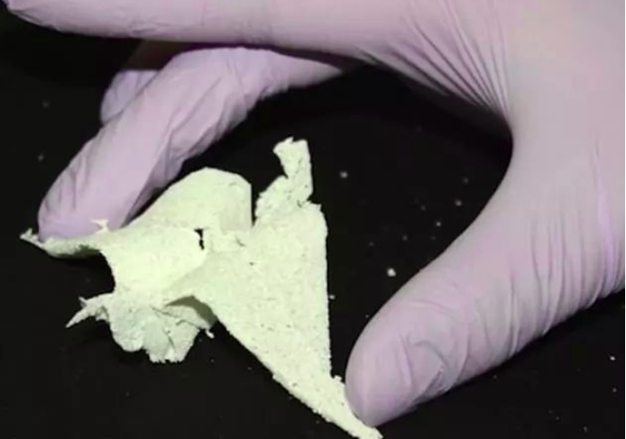

科学养猪的真正奥义，培养拯救人类的医学英雄
而用来提供生物材料、生物制品的猪又叫“材料猪”。
比如医疗上用猪皮保护烧伤创面，在一些手术中使用猪的眼角膜、心脏瓣膜。甚至还用猪细胞生产的胰岛素帮助治疗糖尿病等。
更让你意想不到的是，猪身上的器官还能被制作成薄薄的一层纸。
只是此纸非彼纸，它不光能够折叠，还具备细胞的特性。
听起来就不可思议，但该项研究就发表在近年的《先进功能材料》上。
这种由器官制成的生物纸，甚至还能被冻结供以后使用。
就算是湿了，纸巾也能保持它们的机械性能。
如今科学家正在尝试将这种生物纸卷起来，折叠，切割，并缝合到器官组织上。
这样柔软的纸将有助于进行人体治愈伤口、疤痕修复或者补充癌症病人缺乏的激素。

不过，最厉害的还是“移植猪”。科学家越来越喜欢找“二师兄”来作为异种器官移植的供体了。
目前全球许多患者在等待器官移植，但捐献的人体器官远不能满足需求。
很多患者往往在漫长的等待过程中就离开了世界。
正因如此，科学家早在上世纪60年代就探索着异种器官移植（Xenotransplantation），即是将动物的器官移植到人体内。
而首选的器官供体就是人类的近亲灵长类动物。
当时，外科医生尝试着黑猩猩的器官移植给人类，但手术都以失败告终。
如今，人们才发现拿灵长类动物当供体面临着各种问题。
比如存在物种间的疾病传播，易产生排异反应，以及生长周期长等。
在这种情况下，其貌不扬的猪成为了科学家的第二个选择。

上文提到在解剖学结构上，猪心脏和人的很相似。
又因为物种关系相对较远，疾病传播的可能性降低了很多。
从上世纪9０年代，科学家就尝试进行猪的异种器官移植。
但试验发现，猪器官在人体内不仅存在免疫排斥问题，还可能有“毒”性。
原来在猪基因组里含有内源性逆转录病毒。要想确保“移植猪”的安全性，那就得先让它没有毒。
基因编辑技术让这一想法成为了现实。
2017年，哈佛大学博士后杨璐菡等人成功培育除了世界首批内源性逆转录病毒被灭活的猪。
这解决了将猪作为器官移植供体的生物安全性问题，异种器官移植技术又迈出了重要的一步。